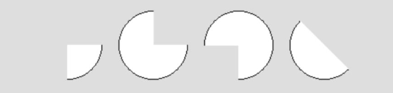
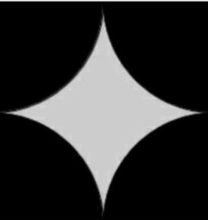
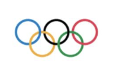
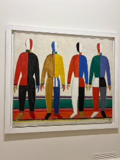

The Flow of a Program
When writing a program, some tasks need to happen once, while others repeat continuously. Processing handles this using two functions: setup() and draw(). The statements belonging to each function are enclosed in curly braces { }. The braces mark the beginning and end of the function's code block.
void setup() {
size(700, 300); // Must be the first statement
frameRate(20); // Set the number of frames per second
}The setup() function runs once when the program starts. It is used for one-time configuration, such as setting the canvas size and frame rate.
After setup() finishes, the draw() function begins. It runs repeatedly until the program stops. Even when a drawing does not yet move, we will usually place drawing commands inside draw(). This prepares the sketch for interaction and animation.
void draw() {
background(0); // Clear and redraw the background each frame
println("I am printing this message 20 times a second!");
}Mouse Interaction
Processing tracks the mouse cursor's position using two variables:
mouseX: horizontal positionmouseY: vertical position
Example:
void setup() {
size(500, 500);
}
void draw() {
background(255); // White background
println(mouseX, mouseY); // Print the current mouse position
}You can use this information to plan coordinates and later to position shapes dynamically on the canvas.
Drawing an Arc
An arc is a section of an ellipse. Use the arc() function with the following parameters:
arc(x, y, width, height, start, stop);Where:
x,y: center coordinates of the ellipsewidth,height: dimensions of the ellipsestart,stop: angles in radians that define the arc's range
Angles in Processing are measured in radians. Angle 0 starts pointing to the right, along the positive x-axis. Angles increase clockwise because the y-axis points downward on the screen. A full turn is TWO_PI, and half a turn is PI. You can convert degrees to radians with radians(degrees).
Example: Drawing a Semicircle
void setup() {
size(400, 400);
}
void draw() {
background(255);
fill(150, 100, 255); // Purple fill
arc(200, 200, 150, 150, 0, PI); // 0 to 180 degrees
}
Key Points to Remember
- Angles are in radians, not degrees. Use
radians(degrees)to convert. - Processing provides useful predefined constants:
PI(approximately 3.14): half-circle, 180°TWO_PI(approximately 6.28): full circle, 360°HALF_PI(approximately 1.57): quarter-circle, 90°QUARTER_PI(approximately 0.78): eighth-circle, 45°
Drawing Irregular Shapes
Custom shapes can be created using beginShape() and endShape(), with a sequence of vertices between them.
Steps to Create a Shape
- Start with
beginShape(). - Add vertices using
vertex(x, y). - Finish the shape with
endShape(). UseendShape(CLOSE)when you want Processing to connect the last vertex back to the first.
Example: Open and Closed Shapes
void setup() {
size(400, 400);
}
void draw() {
background(255);
// Open shape
beginShape();
vertex(100, 100);
vertex(150, 200);
vertex(200, 100);
endShape(); // The last vertex is not connected to the first
// Closed shape
beginShape();
vertex(100, 300);
vertex(150, 370);
vertex(200, 300);
endShape(CLOSE); // Connect the last vertex to the first
}Shape Types
When you pass a parameter to beginShape(), you can specify how Processing should use the vertices:
POINTS: each vertex is a pointLINES: vertices are connected in pairs as line segmentsTRIANGLES: vertices are grouped in sets of threeTRIANGLE_STRIP: connected triangles share verticesQUADS: vertices are grouped in sets of four
Example: Using TRIANGLES
void setup() {
size(400, 400);
}
void draw() {
background(255);
beginShape(TRIANGLES);
vertex(100, 100);
vertex(150, 200);
vertex(200, 100);
vertex(250, 200);
vertex(300, 100);
vertex(200, 300);
endShape();
}Kazimir Malevich and Suprematism
Kazimir Malevich was a Russian avant-garde artist who emphasized abstract forms over realism. His Suprematist works can be recreated in Processing using geometric figures as well as custom shapes made with beginShape() and endShape().
Displayed below is one of Malevich's Suprematist compositions.

You can find the code recreating this composition in the code examples.
code examples.Challenge
Recreate one of Malevich's paintings or create your own abstract design using beginShape() and endShape(). Experiment with angles, colors, and shapes.


Quick Reference
| Function | Description |
|---|---|
size(w, h) | Sets canvas dimensions. |
background(c) | Sets the background color and clears the previous frame. |
arc(x, y, w, h, start, stop) | Draws an arc. |
beginShape() | Starts defining a custom shape. |
endShape() | Finishes the shape definition. |
vertex(x, y) | Adds a vertex to the shape. |
fill(r, g, b) | Sets the fill color for shapes. |
frameRate(fps) | Sets how many times per second draw() runs. |
Download the Examples
Download all Lesson 2 code examples.
Assignment 1: Getting Comfortable with Shapes and Coordinates in Processing
In this assignment, you will practice drawing and combining shapes in Processing. The main goal is to help you become comfortable placing shapes on the canvas using coordinates and to see how more complex images can be built from simple geometric pieces.
Keep the Processing Reference handy while you work.
Use setup() for one-time configuration and place your drawing commands inside draw(). You may also experiment with and trace the position of the mouse cursor.
Do not forget to begin every sketch with a comment containing your name and to add comments explaining what your code is doing.
Note on Images
The images in this assignment are references, not blueprints. You are not expected to reproduce them exactly. Focus on understanding how shapes, coordinates, and angles work together.
Getting Started
- Create a folder named
yourNameAssignment1. - Open a new Processing sketch and save it in this folder under an appropriate name.
You may create multiple sketches inside this folder. You do not need to put everything into a single sketch.
Required Tasks (Everyone)
1. Using arc()
Write a sketch using the arc() function that reproduces the four arc shapes in the figure below.

This task is meant to help you connect numerical angle values to visual results.
2. Ellipses and Arcs
Create another sketch. Using either ellipse() or arc(), draw the figure below on a 200 × 200 pixel canvas.

Tip: It often helps to sketch the figure on paper first or imagine a bounding box before coding.
This task is meant to help you connect numerical angle values to visual results.
Choose TWO of the Following Tasks
Pick any two of the tasks below and complete them in Processing.
3. Draw a House
Design a simple or detailed house using Processing code. Your house can be very simple or more detailed—both are fine.
4. Toy, Animal, or Snowman
Pick one of the following and draw it in Processing:
- a toy car
- an animal
- a snowman
This task emphasizes composition rather than precision.
5. Your Initials
Draw your initials using Processing shapes, not typed text. Be creative with spacing and style.
6. Olympic Flag
Recreate the Olympic flag using Processing.

This task emphasizes accuracy and relative positioning.
For Go-Getters (Optional / Extra Credit)
Recreate one of Malevich's abstract paintings or invent your own abstract design.

Use:
beginShape()andendShape()- angles
- colors
- abstract forms
Concept focus:
- freeform shapes
- experimenting with angles and vertices
- moving beyond predefined shapes
This is an extra-credit challenge and is entirely optional.
Code Requirements
- Begin every sketch with a comment containing your name.
- Your code should be well commented.
- Comments should identify the major parts of the drawing and explain coordinates, angles, or construction choices that are not immediately obvious.
- Artistic perfection is not required—clarity and thoughtful construction matter more.
Submission
- Right-click the
yourNameAssignment1folder and select Compress. - This will create a file named
yourNameAssignment1.zip. - Upload this single ZIP file.
Remember: Every task in this assignment is about thinking geometrically: Where is this shape? Why is it there? How do angles and coordinates control what I see?